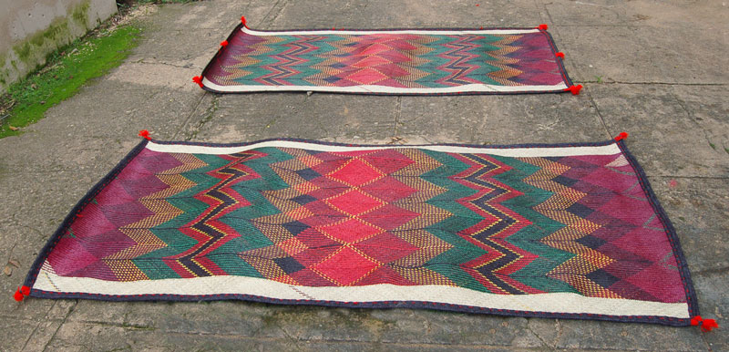

This section Introduces me in brief and also tell you more about the Final project I am working on ,its Brief and progress
Bob is an Electrical engineer,a maker and and Educator.He is passionate about latest technologies,IoT, During mu free time I watch Documantaries,SCI-FI movies and also hanging around with friends. Loves travelling locally and internationally Would Love to visit TelAviv, Jerusalem and the Carribean Islands.
Imagined ,envisioned ,modelled and made African Beauty,Intelligence and conservation at heart in Africa ,for Africa with Affrican
Smart Africanized mat is a mordern mat /carpet that can be used in homes,cars and entertainment events ,Offices etc. It is smart in thet I can detect environmental changes and warm the roon in a smart way . I has user LEDS that I aim to carefully control by slide showing nice photos of African Fabric ,The mat woud notify the owner of dirt on its surface

1) Multilayered -It basically has 3 layers that include a temprearure regulation layer
2) User leds,Dislpays Displays images of Africas Beauty, Scenery,Its people ,wild animals ,places ,Ideas ,culture and music
3) Haptic Feedback and pressure sensors
4) Smart and intelligent -Bluetooth connected
5)Temperature Regulation
1) Smart temperature regulation mechanism using mordern plastinc and mordern smart materials
2) Displays images of Africas Beauty, Scenery,Its people ,wild animals ,places ,Ideas ,culture and music
3) Safe and cool -detects any ubnormality in the house,rising tempretures and water or gas spillage that could harm the occupants of the house,result to fire etc
4) Acts as an entertainment galore with haptic sensors ,lots of leds,smart light patterns etc making you feel loved ,cared for and welcomed especially in special occasions like Valentines Day,Birthdays and family come together parties and reunions
5) Environmentally friendly
I was inspired by
Africanized mat is designed with the user in mind ,In this 3 days I will be doing a thourough User research on the available mats ,the various aspects
Designing of